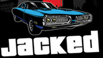
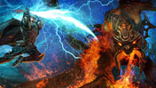
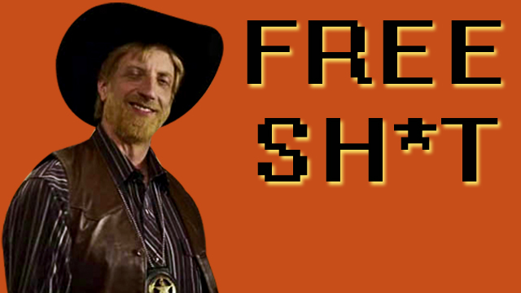

The battle between Marvel's most popular teams has begun, but who will come out on top? Find out in this week's comic book review roundup!

Scandal, stupidity, Seniority. Hot Coffee had it all. A new book tells the tale of Grand Theft Auto and its biggest moment. Here's the GameStack review.

The second DLC expansion for Kingdoms of Amalur: Reckoning has been revealed, offering a new city, a new race and more.

Free Sh*t is giving away a sweet AMD powered HP laptop. Plus, Eagleheart star Chris Elliott stops by with some signed DVDs. All this and much more are...

Google's Project Glass lets you see notifications, send text messages and make video calls by using HUD-enabled glasses.

Avengers writer-director Joss Whedon says the best scene he wrote and then cut from the script was a heartfelt one featuring Captain America.